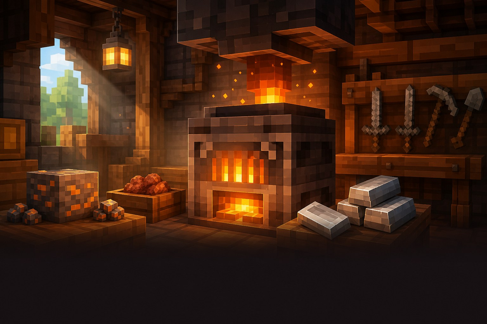

Важливе відкриття
База, що допомагає
Залізо не мусить чекати.
Плавильна піч переплавляє руди й метал удвічі швидше за звичайну піч.

Навіщо вона потрібна?
Після великого походу в шахту руда накопичується. Плавильна піч швидко перетворює її на злитки для інструментів і броні.
Три прості дії
Як користуватися плавильною піччю
1Поклади руду або металВерхня комірка+
Поклади необроблене залізо, золото, інші руди або металеве спорядження, яке хочеш переплавити.
2Додай паливоНижня комірка+
Вугілля, деревне вугілля чи інше паливо запустить піч. Вона працює швидше, тому полум’я горить швидше.
3Забери злиткиПрава комірка+
Готові злитки з’являться праворуч. Тепер з них можна робити міцніші речі.
Плавлення: як це виглядає
залізо
злиток
● Підходить для руд і металу, а не для їжі.
Підказка мандрівникові
Важливо знати
Не для їжі
Для м’яса, риби й картоплі швидше працює коптильня.
Паливо не економиться
За одну річ потрібно приблизно стільки ж палива, як у звичайній печі.
Корисна жителю
Плавильна піч може стати робочим місцем зброяра.
Маленьке завдання
Спробуй за 5 хвилин
- Постав плавильну піч біля звичайної.
- Поклади в обидві однакову руду.
- Подивися, яка піч закінчить першою.
★ Бонус: зроби окреме місце для руди, їжі та звичайної печі.